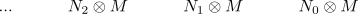

tensor with a flat module commutes with homology
Proposition
Let \(R\) be a ring and $\mathrm{RMod}$ the category RMod and $\mathrm{Ch_*}(\mathrm{RMod})$ the category of chain complexes. Let $M$ be a flat module, then the homology functor commutes with
\begin{align*}
H_n(C) \otimes_R M \cong H_n(C \otimes_R M)
\end{align*}
Proof
Letting
\begin{align*}
M = ... 0 \rightarrow 0 \rightarrow M
\end{align*}
Tensoring results in

By definition we get
\begin{align*}
H_n(C) \otimes_R M =& \mathrm{ker}(\delta)/\mathrm{im}(\partial) \otimes_R M\\
=& (\mathrm{ker}(\partial) \otimes_R M)/\mathrm{ker}(\mathrm{coker}(\partial) \otimes_R M) \\
=& (\mathrm{ker}(\partial) \otimes_R M)/\mathrm{ker}(\mathrm{coker}(\partial \otimes_R M))
=& H_n(C \otimes_R M)
\end{align*}